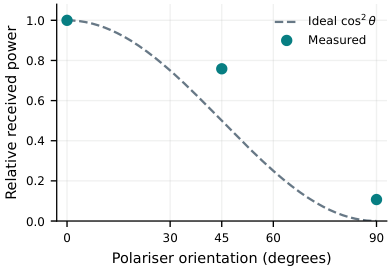
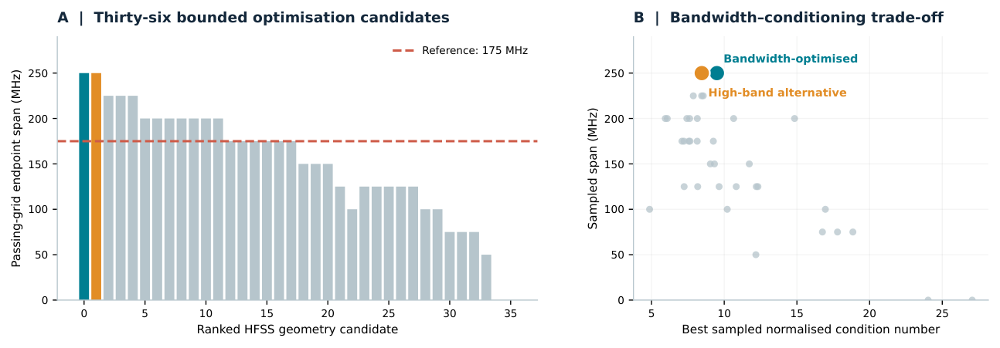
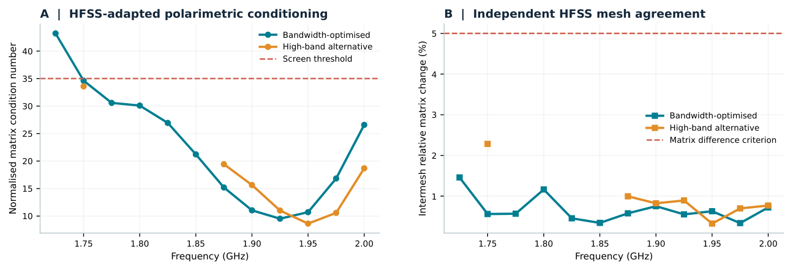
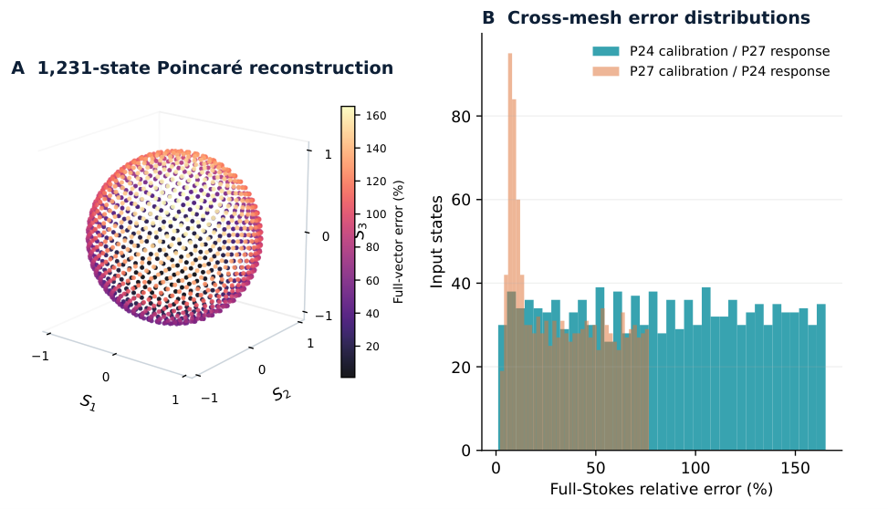
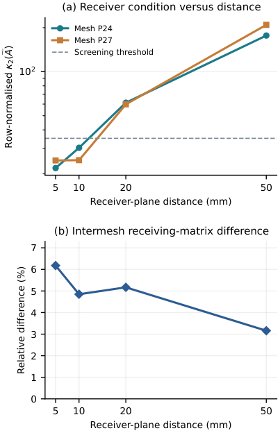
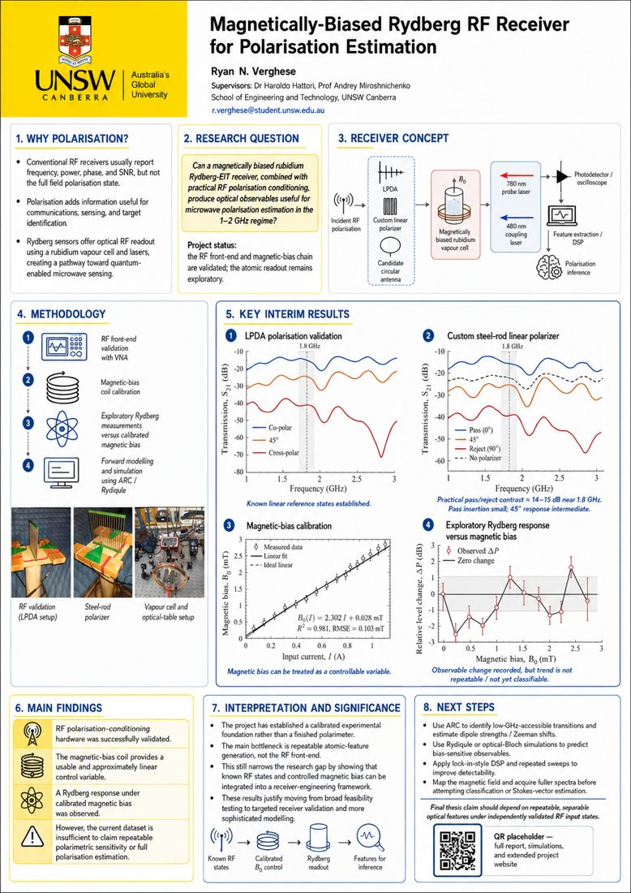

A / EXPERIMENT
Rydberg atomic receiver
Rb-87 vapour-cell EIT, 780/480 nm optical interrogation, RF antenna and polariser measurements, Helmholtz-coil calibration and optical readout.
See laboratory research ↗Laboratory Rydberg electromagnetically induced transparency meets information-aware microwave metasurface design. A source-linked record of the physics, apparatus, simulation, evidence, and engineering methods.

Experimental apparatus characterisation and electromagnetic simulation inform the same scientific goal, but each has its own independent evidence and limits.
Rb-87 vapour-cell EIT, 780/480 nm optical interrogation, RF antenna and polariser measurements, Helmholtz-coil calibration and optical readout.
See laboratory research ↗Two-face copper geometry, six electromagnetic analyser states, complex-field extraction, instrument-matrix conditioning, independent mesh checks and finite-aperture study.
See analyser engineering ↗Rotate a Poincaré sphere, apply the documented HFSS-derived six-state instrument matrix, export model responses and search original sources. This is an offline numerical demonstration, not a physical atomic measurement.
All metrics below come from the current research manuscript's stated HFSS modelling and offline information criteria, not experimental atomic full-Stokes detection.
Actual manuscript figures have been paired with their own caption and origin. Filter by experimental versus HFSS-derived data to follow the correct evidence trail.

RF polarisation dependence from documented experiment.
View context ↗
Source-backed numerical search and acceptance outcomes.
View metrics ↗
Separately adapted field-solution comparison.
View method ↗
Matrix-based information content and response from complex fields.
View mathematics ↗
Geometric and observation-plane sensitivity in finite array.
View qualification ↗
Scientific overview with historical experimental and conceptual material.
View outputs ↗Images are sourced directly from the imported manuscript or authored project poster, not stock imagery. Detailed figure mapping: Figure provenance ↗
Explore the research by discipline, from physical experiments and design iterations to numerical validation, research software, original papers and engineering handover. Historical source files are indexed separately from verified imports.
Scientific milestones and design decisions across the programme.
Read history ↗LAB780/480 nm EIT, RF front end, optical and magnetic experiments.
Explore lab ↗RFLinear, circular, finite and six-state reconfigurable designs.
Browse designs ↗EMComplex fields, state screening, optimisation and verification.
View campaigns ↗SWARC, Rydiqule, MATLAB, CST, automated HFSS and Workbench.
View software ↗1,280Historical records identified for original-file preservation and audit.
Open catalogue ↗Go directly from an academic claim to the original source, code and explicit reproduction protocol.
Thematic reading map, comparison and design rationale.
Explore ↗02Optics, RF, materials, purchase/quotation differentiation.
Explore ↗03Native-return evidence, field outputs, matrices and verification.
Explore ↗04Editable full LaTeX paper, figures and references.
Explore ↗05Geometry, fabrication requirements and traceability.
Explore ↗06Conference, academic and industry record/register.
Explore ↗Read the architectural context, replicate source-backed numerical analysis, inspect experiment procedures and follow an explicit first-week onboarding plan. Missing native source categories are clearly tracked.
Open technical handover ↗Literature, requirements, apparatus and hypothesis.
Archive checksums, field matrices, source figures, solver logs.
Finite model, hardware, atomic calibration and reproducibility.